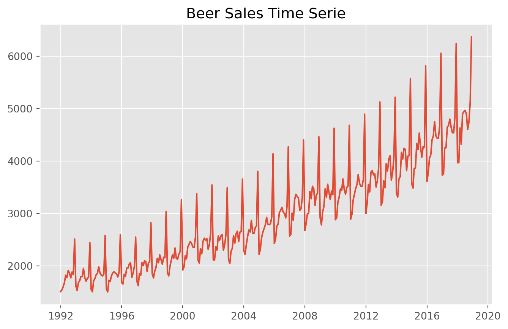
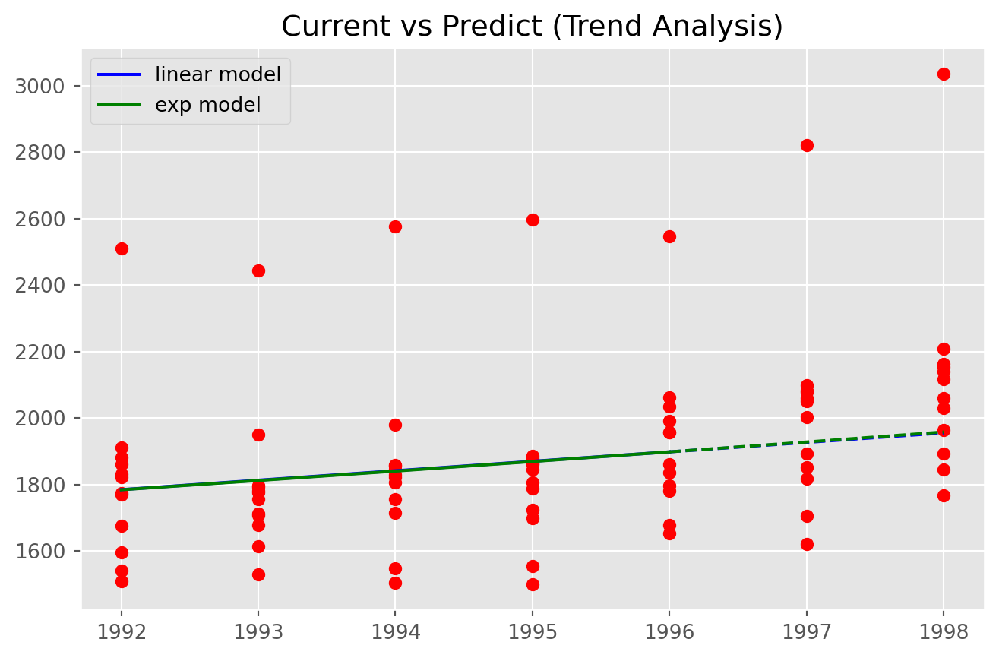
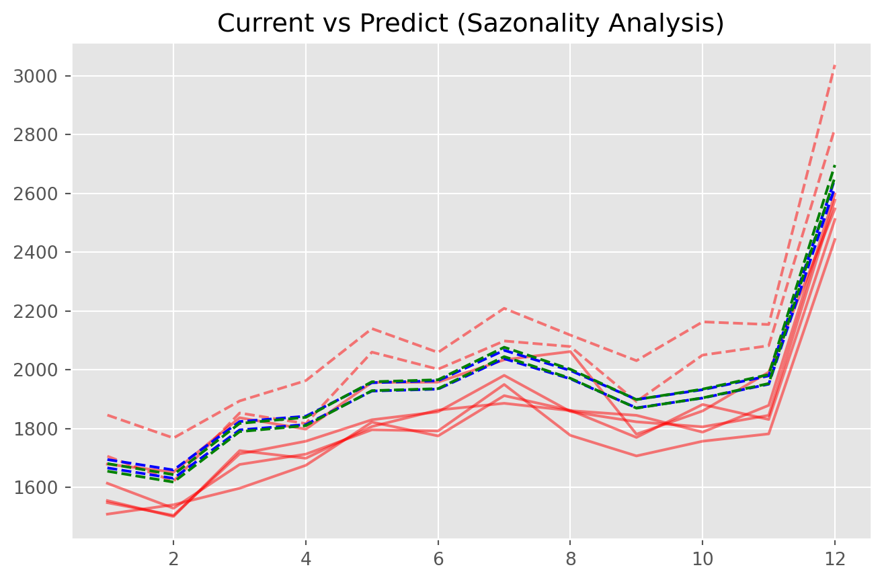
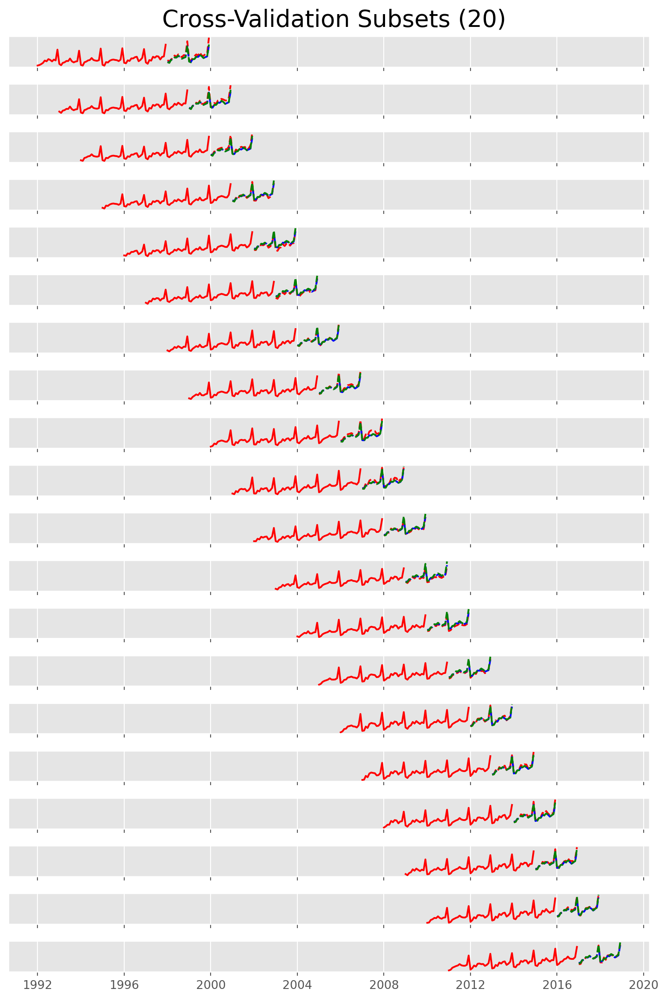

import pandas as pd
import numpy as np
import statsmodels.api as sm
from pmdarima.model_selection import SlidingWindowForecastCV
import matplotlib.pyplot as plt
plt.style.use('ggplot')Regressão Linear Aplicada à Séries Temporais
Sumário
Sumário 1
Resumo 2
Regressão Linear e Séries Temporais 3
Modelando Tendência 3.1
Modelando Sazonalidade Mensal 4
Validação Cruzada 4.1
Variáveis Exógenas e Considerações Finais 5
Resumo
O texto parte do princípio que o leitor tem um conhecimento básico sobre o que é uma regressão linear. Nele apresenta como esse modelo pode ser usado no contexto de séries temporais. Na maioria absoluta das vezes o uso de regressão linear no contexto de séries temporais é dispensado, dado que modelos da classe ARMA tem a capacidade de comportar tendências (ARIMA), sazonalidade (SARMA) e variáveis exógenas (ARMAX). Os modelos da classe ARMA podem se dizer “extensões” de regressões lineares aplicadas à séries temporais, no entanto, o entendimento de como comportar regressões lineares para séries temporais é o que vai permitir o leitor a entender como funcionam regressões não paramétricas, em especial algoritimos baseados em árvores de decisão (LightGBM e XGboost, por exemplo), podem ser usadas para este tipo de problema.
Para esse exercício, será o dataset beer sales, que reúne uma série histórica de vendas de cerveja. O dataset junto aos pacotes usados podem ser vistos abaixo.
Pacotes usados:
import warnings
warnings.simplefilter(action='ignore', category=FutureWarning)
path = "https://raw.githubusercontent.com/flo7up/relataly_data/main/alcohol_sales/BeerWineLiquor.csv"Dataset:
df = pd.read_csv(path, parse_dates=['date'], index_col=['date'])
df.head()| beer | |
|---|---|
| date | |
| 1992-01-01 | 1509 |
| 1992-02-01 | 1541 |
| 1992-03-01 | 1597 |
| 1992-04-01 | 1675 |
| 1992-05-01 | 1822 |

Regressão Linear e Séries Temporais
Uma observação sempre pertinente sobre Regressão Linear é que existe essencialmente dois modelos diferentes e eventualmente coincidentes: existe a regressão linear como modelo matemático que minimiza quadrados ordinários e existe a regressão linear como modelo probabilístico que produz estimadores não enviesados de menor variância possível (BLUE). Isso é, existe a regressão linear da álgebra linera e a regressão linear da estatística. No escopo deste texto, aprendizado de máquina supervisionado, será visto o primeiro modelo. Isso é, a nossa regressão linear vai ser pensada como um algoritimo que encontra uma estimativa para um modelo com parâmetros lineares entre si, minimizando o quadrado dos resíduos em treino sem fazer suposições a cerca do comportamento dos resíduos.
No contexto de Séries Temporais, o que pode-se fazer com regressão linear é estimar modelos “mecanisticos” para sua variável aleatória \(y_t\). O “mecanístico” vem lá da Física Mecânica mesmo. Estimar uma função de posição ao longo do tempo para a sua variável e adicionar covariáveis para explicar isto. O desafio vai ser especificar essa função de forma que capte melhor o movimento da variável. Um ponto interessante é que como está se estimando a “velocidade” de crescimento, é interessante não usar um dataset tão grande, para que estime velocidades “locais”.
Além disso, é interessante pontuar que se modela separadamente (no memso modelo, mas com “fatores” próprios para cada) os diferentes componentes de uma série temporal. No caso, para o dataset a ser usado, há componentes de tendência e sazonalidade mensal a serem controlados e que serão adicionados por partes no modelo. A idéia é controlar esses fatores até que os erros do modelo sejam meramente ao acaso, ou, como é visto nos modelos ARIMA, sejam “ruídos brancos”.
Modelando Tendência:
Para o nosso dataset, vamos sugerir inicialmente dois modelos mais simples de tendência:
Demanda com crescimento constante e linear: \[y_{t} = \beta_{0} + \beta_{1}t\]
- Isso é, nossa demanda segue um “movimento retilinio uniforme”, onde a velocidade é dada por \(\beta_{1}\) e a posição inicial é dada por \(\beta_{0}\)
Demanda com crescimento exponencial: \[y_{t} = \beta_{0} e^{\beta_{1}t}\]
- Nesse caso, o modelo não seria linear, mas pode-se linearizá-lo usando o logaritimo de \(y_{t}\):
\[ln(y_{t}) = ln(\beta_{0}) + \beta_{1}t\]
Interessante notar que na prática os dois modelos têm a mesma cara, mas um está olhando para a variável em nível e o outro para o logaritimo da variável.
Modelando em Python:
n = 60 # tamanho da amostra de treinamento
df_train = pd.DataFrame({'y': df.iloc[:n, 0],
'b0': np.ones(n),
'b1': np.arange(0, n)}) # Dataset a ser trabalhado
df_train.head()| y | b0 | b1 | |
|---|---|---|---|
| date | |||
| 1992-01-01 | 1509 | 1.0 | 0 |
| 1992-02-01 | 1541 | 1.0 | 1 |
| 1992-03-01 | 1597 | 1.0 | 2 |
| 1992-04-01 | 1675 | 1.0 | 3 |
| 1992-05-01 | 1822 | 1.0 | 4 |
# Treinando Modelo 1
model_1 = sm.OLS(df_train.y, df_train[['b0', 'b1']])
results_1 = model_1.fit()
print(results_1.summary()) OLS Regression Results
==============================================================================
Dep. Variable: y R-squared: 0.091
Model: OLS Adj. R-squared: 0.076
Method: Least Squares F-statistic: 5.831
Date: Mon, 22 Jan 2024 Prob (F-statistic): 0.0189
Time: 22:51:20 Log-Likelihood: -412.79
No. Observations: 60 AIC: 829.6
Df Residuals: 58 BIC: 833.8
Df Model: 1
Covariance Type: nonrobust
==============================================================================
coef std err t P>|t| [0.025 0.975]
------------------------------------------------------------------------------
b0 1714.4000 61.033 28.090 0.000 1592.230 1836.570
b1 4.3085 1.784 2.415 0.019 0.737 7.880
==============================================================================
Omnibus: 29.551 Durbin-Watson: 1.886
Prob(Omnibus): 0.000 Jarque-Bera (JB): 52.993
Skew: 1.700 Prob(JB): 3.11e-12
Kurtosis: 6.103 Cond. No. 67.6
==============================================================================
Notes:
[1] Standard Errors assume that the covariance matrix of the errors is correctly specified.O modelo estimado foi:
\[\hat{y_t} = 1714.40 + 4.31t\]
# Treinando Modelo 2
model_2 = sm.OLS(np.log(df_train.y), df_train[['b0', 'b1']])
results_2 = model_2.fit()
print(results_2.summary()) OLS Regression Results
==============================================================================
Dep. Variable: y R-squared: 0.103
Model: OLS Adj. R-squared: 0.088
Method: Least Squares F-statistic: 6.659
Date: Mon, 22 Jan 2024 Prob (F-statistic): 0.0124
Time: 22:51:20 Log-Likelihood: 43.407
No. Observations: 60 AIC: -82.81
Df Residuals: 58 BIC: -78.62
Df Model: 1
Covariance Type: nonrobust
==============================================================================
coef std err t P>|t| [0.025 0.975]
------------------------------------------------------------------------------
b0 7.4425 0.030 244.475 0.000 7.382 7.503
b1 0.0023 0.001 2.580 0.012 0.001 0.004
==============================================================================
Omnibus: 20.335 Durbin-Watson: 1.801
Prob(Omnibus): 0.000 Jarque-Bera (JB): 28.301
Skew: 1.286 Prob(JB): 7.15e-07
Kurtosis: 5.170 Cond. No. 67.6
==============================================================================
Notes:
[1] Standard Errors assume that the covariance matrix of the errors is correctly specified.O modelo estimado foi:
\[\hat{y_t} = 1707.01 e^{0.0023t}\]
Fazendo previsões com os modelos:
h = 24 # Intervalo de predição
input_predict = pd.DataFrame({'b0': np.ones(h),
'b1': np.arange(n, n+h)})
predict_model_1 = results_1.predict(input_predict[['b0', 'b1']])
# Lembrando que o modelo enxerga o logaritimo, por isso o exp
predict_model_2 = np.exp(results_2.predict(input_predict[['b0', 'b1']])) 

No caso, os dois modelos, de certa forma, pegaram bem a tendência da série. A questão está nos padrões dos erros relacionados a sazonalidade mensal.
Sazonalidade Mensal
Apesar da modelagem da tendência ter sido bem sucedida, é vizualmente nítido que há um forte padrão nos erros. Todo mês de janeiro, a previsão fica abaixo, por exemplo. O ponto em questão agora é saber como se dá a estrutura desse erro. Na prática, o que será feito é estimar o “empurrãozinho” que cada mês dá nessa reta estimada. Dá mesma forma que a tendência pode ser linear ou exponencial, a sazonalidade pode ser aditiva ou multiplicativa. No caso da aditiva, é, todo mês, adicionado um fator ao nível da série (negativo ou positivo). No caso da multiplicativa, todo mês o nível da série é multiplicado por um fator diferente.
No caso, o Modelo 1 terá sazonalidade aditiva. O novo modelo 1 pode ser visto como:
\[y_{t} = \beta_{0} + \beta_{1}t + \beta_{jan} x_{jan} + \beta_{fev} x_{fev} + ... + \beta_{nov} x_{nov}\]
Onde \(x_{jan}\) vale 1 se é o mês de janeiro, 0 caso contrário. As demais variáveis se comportam do mesmo jeito. Isso é, para o mês de julho, por exemplo, o valor esperado de \(y_{t}\) é dado por: \(\hat{y_{t}} = \beta_{0} + \beta_{1}t + \beta_{jul}\).
Para o Modelo 2 será usada a sazonalidade multiplicativa. Sendo o modelo 2:
\[y_{t} = \beta_{0} e^{\beta_{1}t} e^{\beta_{jan}x_{jan}} e^{\beta_{fev} x_{fev}} ... e^{\beta_{nov} x_{nov}}\]
Linearizando o modelo:
\[ln(y_{t}) = ln(\beta_{0}) + \beta_{1}t +\beta_{jan} x_{jan} + \beta_{fev} x_{fev} + ... + \beta_{nov} x_{nov}\]
No caso, citando novamente o mês de julho, o valor esperado seria \(y_{t} = \beta_{0} e^{\beta_{1}t} e^{\beta_{jul}}\), dado que as demais variáveis \(x_{mes}\) seriam 0 e \(e^{0} = 1\). Sendo, portanto, \(e^{\beta_{jul}}\) o efeito do mês de julho na demanda.
Você pode ter se perguntado: “E dezembro?”. Bom, aí entra o tal problema da multicolinearidade. Se no modelo tiver os 12 meses como variáveis dummies, então a coluna do intercepto (que vale 1) vai ser a soma de todas as colunas de sazonalidade, o que seria uma colinearidade perfeita.
Modelando em Python:
# Criando um dataframe com variáveis dummies:
df_sazo = pd.get_dummies(
pd.DataFrame({"mes_": [i.month for i in df.index[:n]]}),
columns=['mes_'],
prefix="mes"
)
df_train = pd.concat([df_train.reset_index(drop=True),
df_sazo], axis=1).astype(int).drop(labels=['mes_12'], axis=1)
df_train.head()| y | b0 | b1 | mes_1 | mes_2 | mes_3 | mes_4 | mes_5 | mes_6 | mes_7 | mes_8 | mes_9 | mes_10 | mes_11 | |
|---|---|---|---|---|---|---|---|---|---|---|---|---|---|---|
| 0 | 1509 | 1 | 0 | 1 | 0 | 0 | 0 | 0 | 0 | 0 | 0 | 0 | 0 | 0 |
| 1 | 1541 | 1 | 1 | 0 | 1 | 0 | 0 | 0 | 0 | 0 | 0 | 0 | 0 | 0 |
| 2 | 1597 | 1 | 2 | 0 | 0 | 1 | 0 | 0 | 0 | 0 | 0 | 0 | 0 | 0 |
| 3 | 1675 | 1 | 3 | 0 | 0 | 0 | 1 | 0 | 0 | 0 | 0 | 0 | 0 | 0 |
| 4 | 1822 | 1 | 4 | 0 | 0 | 0 | 0 | 1 | 0 | 0 | 0 | 0 | 0 | 0 |
model_1_sazo = sm.OLS(df_train.y, df_train.iloc[:, 1:])
results_1_sazo = model_1_sazo.fit()
print(results_1_sazo.summary()) OLS Regression Results
==============================================================================
Dep. Variable: y R-squared: 0.963
Model: OLS Adj. R-squared: 0.954
Method: Least Squares F-statistic: 103.1
Date: Mon, 22 Jan 2024 Prob (F-statistic): 1.58e-29
Time: 22:51:20 Log-Likelihood: -316.44
No. Observations: 60 AIC: 658.9
Df Residuals: 47 BIC: 686.1
Df Model: 12
Covariance Type: nonrobust
==============================================================================
coef std err t P>|t| [0.025 0.975]
------------------------------------------------------------------------------
b0 2452.3424 27.773 88.300 0.000 2396.471 2508.214
b1 2.3674 0.406 5.832 0.000 1.551 3.184
mes_1 -928.1590 34.043 -27.265 0.000 -996.644 -859.674
mes_2 -965.9264 33.992 -28.417 0.000 -1034.309 -897.544
mes_3 -803.6938 33.946 -23.676 0.000 -871.983 -735.404
mes_4 -787.8611 33.904 -23.238 0.000 -856.068 -719.654
mes_5 -676.2285 33.868 -19.967 0.000 -744.362 -608.095
mes_6 -671.9958 33.836 -19.860 0.000 -740.065 -603.926
mes_7 -570.7632 33.809 -16.882 0.000 -638.779 -502.747
mes_8 -641.7306 33.787 -18.993 0.000 -709.702 -573.759
mes_9 -742.8979 33.770 -21.999 0.000 -810.835 -674.961
mes_10 -711.8653 33.758 -21.087 0.000 -779.778 -643.953
mes_11 -667.0326 33.751 -19.763 0.000 -734.931 -599.135
==============================================================================
Omnibus: 0.822 Durbin-Watson: 1.482
Prob(Omnibus): 0.663 Jarque-Bera (JB): 0.877
Skew: 0.258 Prob(JB): 0.645
Kurtosis: 2.710 Cond. No. 430.
==============================================================================
Notes:
[1] Standard Errors assume that the covariance matrix of the errors is correctly specified.No caso, para o mês de julho, o modelo estimado foi: \[\hat{y_{t}} = 1518.57 + 2.37t + 181.50 = 1700.07 + 2.37t\]
model_2_sazo = sm.OLS(np.log(df_train.y), df_train.iloc[:, 1:])
results_2_sazo = model_2_sazo.fit()
print(results_2_sazo.summary()) OLS Regression Results
==============================================================================
Dep. Variable: y R-squared: 0.956
Model: OLS Adj. R-squared: 0.945
Method: Least Squares F-statistic: 85.87
Date: Mon, 22 Jan 2024 Prob (F-statistic): 9.41e-28
Time: 22:51:20 Log-Likelihood: 134.11
No. Observations: 60 AIC: -242.2
Df Residuals: 47 BIC: -215.0
Df Model: 12
Covariance Type: nonrobust
==============================================================================
coef std err t P>|t| [0.025 0.975]
------------------------------------------------------------------------------
b0 7.7926 0.015 511.965 0.000 7.762 7.823
b1 0.0013 0.000 5.801 0.000 0.001 0.002
mes_1 -0.4585 0.019 -24.574 0.000 -0.496 -0.421
mes_2 -0.4823 0.019 -25.892 0.000 -0.520 -0.445
mes_3 -0.3828 0.019 -20.578 0.000 -0.420 -0.345
mes_4 -0.3728 0.019 -20.065 0.000 -0.410 -0.335
mes_5 -0.3104 0.019 -16.724 0.000 -0.348 -0.273
mes_6 -0.3083 0.019 -16.623 0.000 -0.346 -0.271
mes_7 -0.2548 0.019 -13.750 0.000 -0.292 -0.218
mes_8 -0.2927 0.019 -15.807 0.000 -0.330 -0.255
mes_9 -0.3470 0.019 -18.748 0.000 -0.384 -0.310
mes_10 -0.3297 0.019 -17.821 0.000 -0.367 -0.292
mes_11 -0.3058 0.018 -16.530 0.000 -0.343 -0.269
==============================================================================
Omnibus: 1.008 Durbin-Watson: 1.449
Prob(Omnibus): 0.604 Jarque-Bera (JB): 1.071
Skew: 0.231 Prob(JB): 0.585
Kurtosis: 2.536 Cond. No. 430.
==============================================================================
Notes:
[1] Standard Errors assume that the covariance matrix of the errors is correctly specified.E, novamente tomando julho como exemplo, o modelo estimado foi:
\[\hat{y_t} = e^{\hat{\beta_0}} e^{\hat{\beta_1}t} e^{\hat{\beta_{jul}}} = 604.68 e^{0.0013t} 1.762 = 1065.45 e^{0.0013t}\]
Fazendo previsões com os modelos:
input_predict = pd.DataFrame({'b0': np.ones(h),
'b1': np.arange(n, n+h)})
df_sazo_predict = pd.get_dummies(
pd.DataFrame({"mes_": [i.month for i in df.index[n:n+h]]}),
columns=['mes_'],
prefix="mes"
).astype(int).drop(labels=['mes_12'], axis=1)
input_predict_sazo = pd.concat([input_predict,
df_sazo_predict],
axis=1)
predict_model_1_sazo = results_1_sazo.predict(input_predict_sazo)
# Lembrando que o modelo enxerga o logaritimo, por isso o exp
predict_model_2_sazo = np.exp(results_2_sazo.predict(input_predict_sazo)) 


Nesse caso, ambos modelos apresentam um comportamento muito parecido. No caso, isso deve-se e muito a amostra escolhida. É nítido que os primeiros 5 anos apresentam uma tendência menor, o que faz que ambos modelos tenham uma tendência quase nula. O que pode-se fazer agora é modularizar o código e fazer uma validação cruzada do previsto.
Validação Cruzada:
A idéia da validação cruzada é bem simples: treinar o modelo inúmeras vezes com amostras distintas pra ver analisar a capacidade de extrapolação.
cv = SlidingWindowForecastCV(step=12,
h=24,
window_size=72)
cv_generator = cv.split(df)
Nesse caso, serão treinados 20x cada modelo com amostras diferentes (mas não tãããão independentes, dado que uma observação aparece 5x em cada amostra) e será avaliado o desempenho de cada um prevendo dois anos seguintes. Criando uma função que prevê os dois anos seguintes:
- Dataset com os inputs:
df_cv = df.copy()
df_cv.columns = ['y']
df_cv['b0'] = 1
df_cv['b1'] = np.arange(len(df_cv))
dummies_sazo = pd.get_dummies(pd.DataFrame({"mes": df_cv.index.month}), columns=["mes"]).astype(int).drop(labels=['mes_12'], axis=1)
df_cv = pd.concat([df_cv.reset_index(drop=True),
dummies_sazo], axis=1)
df_cv.head()| y | b0 | b1 | mes_1 | mes_2 | mes_3 | mes_4 | mes_5 | mes_6 | mes_7 | mes_8 | mes_9 | mes_10 | mes_11 | |
|---|---|---|---|---|---|---|---|---|---|---|---|---|---|---|
| 0 | 1509 | 1 | 0 | 1 | 0 | 0 | 0 | 0 | 0 | 0 | 0 | 0 | 0 | 0 |
| 1 | 1541 | 1 | 1 | 0 | 1 | 0 | 0 | 0 | 0 | 0 | 0 | 0 | 0 | 0 |
| 2 | 1597 | 1 | 2 | 0 | 0 | 1 | 0 | 0 | 0 | 0 | 0 | 0 | 0 | 0 |
| 3 | 1675 | 1 | 3 | 0 | 0 | 0 | 1 | 0 | 0 | 0 | 0 | 0 | 0 | 0 |
| 4 | 1822 | 1 | 4 | 0 | 0 | 0 | 0 | 1 | 0 | 0 | 0 | 0 | 0 | 0 |
- Função que treina o modelo e prevê os próximos h períodos:
def fit_predict(df_train: pd.DataFrame, df_test: pd.DataFrame, h: int, log: bool):
model = sm.OLS(np.log(df_train.iloc[:, 0]) if log else df_train.iloc[:, 0],
df_train.iloc[:, 1:])
result = model.fit()
predict = np.exp(result.predict(df_test.iloc[:, 1:])) if log else result.predict(df_test.iloc[:, 1:])
return predict - Validação cruzada:
cv_generator = cv.split(df)
log_win = np.zeros(n, dtype=float)
for i in range(n):
index = next(cv_generator)
predict_lin = fit_predict(df_cv.iloc[index[0]], df_cv.iloc[index[1]], 12, False)
predict_log = fit_predict(df_cv.iloc[index[0]], df_cv.iloc[index[1]], 12, True)
sqr_lin = ((predict_lin - df_cv.iloc[index[1], 0])**2).sum()
sqr_log = ((predict_log - df_cv.iloc[index[1], 0])**2).sum()
if sqr_log < sqr_lin:
log_win[i] = 1
print(f"Modelo log performou melhor em {100*log_win.mean()}% das vezes")Modelo log performou melhor em 70.0% das vezes
Nesse caso, o modelo que prevê o logaritimo, e tem por trás suposição de um crescimento exponencial e sazonalidade multiplicativa, performa acima e, pode-se dizer, de forma satisfatória.
Variáveis Exógenas e Considerações Finais
Além de variáveis relacionadas ao mês e ano, poderia ter sido utilizado variáveis externa a demanda total, como preços e promoções. Uma ressalva quanto a variáveis exógenas em modelos de séries temporais é a incerteza da sua variável no momento de predição. Você sabe exatamente qual foi a temperatura média, quantos foram os clientes e quais promoções foram feitas no passado, mas provavelmente não sabe como serão no futuro e, desta forma, não é aconselhado usá-los. Isso porque em treino você usou o valor real e em produção vai usar a PREVISÃO do valor, contendo uma incerteza que vai produzir uma performance aquém do esperado. Pode-se usar variáveis com componentes de incerteza, contanto que se faça um estudo prévio para mensurar a performance do modelo trabalhando com a incerteza, sem incorrer em data lakage.
Quanto ao uso da Regressão Linear em Séries Temporais, apesar de produzir uma performance interessante, recomenda-se o uso de modelos SARIMA que, além de poder comportar tendências polinomiais e exponenciais (tudo depende da especificação), permite estimar estruturas para os efeitos sazonais. Enquanto a Regressão Linear vai assumir efeitos fixos, SARIMA estimam estes efeitos, mas também analisando como os resíduos estão autocorrelacionados ao longo dessa do tempo. Em resumo, não há nada que modelos de regressão linear façam em séries temporais, que os modelos SARIMA não podem fazer, incluindo até mesmo o uso de variáveis exógenas na previsão (SARIMAX).